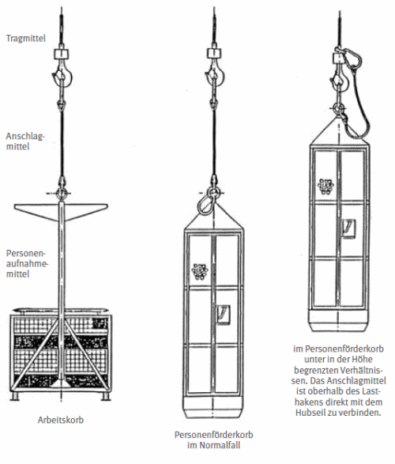

Der Unternehmer hat die erste Inbetriebnahme des hochziehbaren Personenaufnahmemittels – ausgenommen sind Siloeinfahreinrichtungen – dem zuständigen Unfallversicherungsträger schriftlich anzuzeigen, auf Verlangen auch die Inbetriebnahme nach längeren Arbeitspausen und nach Standortwechsel. Die Anzeige muss mindestens 14 Tage vor dem Einsatz erfolgen.
Anhang 2 enthält einen Vordruck für die Anzeige. Besondere Festlegungen über die Anzeige- oder Genehmigungspflicht vor dem Betrieb von hochziehbaren Personenaufnahmemitteln siehe auch DGUV Vorschrift 52 und 53 "Krane" (bisher BGV VD6 und GUV-V D6) und DGUV Vorschrift 38 und 39 "Bauarbeiten" (bisher BGV V C22 und GUV-V C22).
Für die einwandfreie Durchführung des Betriebes hat der Unternehmer einen Aufsichtführenden zu bestimmen; auf Verlangen des Unfallversicherungsträgers ist dieser zu benennen.
Aufsichtführender ist, wer die Durchführung von Arbeiten zu überwachen und für die arbeitssichere Ausführung zu sorgen hat; er muss hierfür ausreichende Kenntnisse und Erfahrungen besitzen sowie weisungsbefugt sein.
5.1.3.1 Mit dem selbstständigen Betreiben und Warten von hochziehbaren Personenaufnahmemitteln darf der Unternehmer nur solche Versicherten beauftragen, die mit diesen Aufgaben vertraut sind.
5.1.3.2 Der Hebezeugführer darf den Steuerstand seines Hebezeuges nicht verlassen, solange das Personenaufnahmemittel besetzt ist. Der Betrieb ist möglichst so einzurichten, dass der Hebezeugführer das Personenaufnahmemittel in allen Stellungen gut beobachten kann. Zur Verständigung sind eindeutige und deutlich wahrnehmbare Zeichen zu vereinbaren. Verwechselungen in der Verständigung müssen ausgeschlossen sein.
Die Verständigung zwischen dem Hebezeugführer und den im Personenaufnahmemittel befindlichen Personen kann zum Beispiel durch Einweiser, Funksprechverkehr und Gegensprechverkehr vorgenommen werden.
Beim Einfahren in Silos und Bunker aus Stahl kann die Gefahr der Unterbrechung von Funkverbindungen bestehen.
5.1.3.3 Der Unternehmer darf Hebezeugführer und Einweiser während ihres Einsatzes nicht gleichzeitig mit anderen Arbeiten beauftragen; sie dürfen während ihres Einsatzes jeweils nur ein Hebezeug führen beziehungsweise nur ein Personenaufnahmemittel einweisen.
5.1.4.1 Der Unternehmer hat für den jeweils vorgesehenen Einsatz Hebezeuge mit ausreichender Tragfähigkeit zur Verfügung zu stellen.
5.1.4.2 Die zulässige Belastung von Hebezeugen darf nicht überschritten werden.
5.1.4.3 Hebezeuge, für die allgemeine Ausnahmen bestehen, dürfen zum Bewegen von Personenaufnahmemitteln nicht eingesetzt werden.
Siehe z.B. Abschnitt "Übergangs- und Ausführungsbestimmungen" der DGUV Vorschrift 54 und 55 "Winden, Hub- und Zuggeräte" (bisher BGV V D8 und GUV-V D8) und DGUV Vorschrift 52 und 53 "Krane" (bisher BGV V D6 und GUV-V D6).
5.1.5 Benutzung von Personenaufnahmemitteln
5.1.5.1 Die zulässige Belastung von Personenaufnahmemitteln darf nicht überschritten werden; mitgeführtes Werkzeug und Material ist insbesondere gegen Verschieben, Umkippen und Herausfallen zu sichern.
5.1.5.2 Werden Personenaufnahmemittel durch Öffnungen gefahren, sind besondere Maßnahmen gegen Verhaken und Quetschgefahren zu treffen.
Öffnungen können z.B. in Decken, Bühnen und Gerüsten vorhanden sein.
Besondere Maßnahmen sind z.B. die Anordnung von Leitvorrichtungen an den Öffnungen oder am Personenaufnahmemittel sowie das Durchfahren der Öffnungen im Handbetrieb.
5.1.5.3 Notendhalteinrichtungen dürfen betriebsmäßig nicht angefahren werden.
5.1.5.4 Einrichtungen nach den Abschnitten 4.2.5 und 4.2.8 müssen während des Betriebes gegen unbeabsichtigtes und unbefugtes Betätigen gesichert sein.
Einrichtungen nach Abschnitt 4.2.5 sind z.B. Getriebeschalthebel, solche nach 4.2.8 z.B. Bremslüfteinrichtungen.
5.1.5.5 Die in Abschnitt 4.2.6.2 angegebenen Fördergeschwindigkeiten dürfen bei der Personenbeförderung nicht überschritten werden.
5.1.5.6 Personenaufnahmemittel müssen so gesichert werden, dass ein gefahrloses Ein- und Aussteigen möglich ist.
Ein gefahrloses Ein und Aussteigen kann z.B. durch Verankern, Festbinden und Absetzen gewährleistet werden.
5.1.5.7 Personenaufnahmemittel müssen gegen starkes Pendeln gesichert werden.
Starkes Pendeln kann durch Wind herbeigeführt werden; die Sicherung kann beispielsweise durch Leitseile oder Verankerungen erfolgen.
5.1.5.8 Anschlagmittel von Personenaufnahmemitteln dürfen nicht wechselweise auch zum Anschlagen von Lasten benutzt werden. Personenförderkörbe und Arbeitskörbe ohne fest angebaute Winde oder Winde in der Aufhängung sind mit dem nach Abschnitt 4.1.3.1 geforderten Anschlagmittel mit dem Tragmittel des Hebezeuges zu verbinden.
Das Anschlagen von Arbeitskörben und Personenförderkörben

5.1.5.9 Gleichzeitig mit dem Personenaufnahmemittel dürfen am Tragmittel des Hebezeuges keine weiteren Lasten angeschlagen werden.
5.1.5.10 Abweichend von Abschnitt 5.1.4.2 darf eine Kranwaage betrieben werden, wenn sichergestellt ist, dass das Gesamtgewicht von Last und Kranwaage die Tragfähigkeit des Hebezeuges nicht übersteigt und die Last nicht höher angehoben wird, als es für die Wägung unbedingt erforderlich ist.
Kranwaagen sind Wägeeinrichtungen, die zwischen Lasthaken und Last gehängt werden und bei denen der Waagenableser auf einer fest an der Waage angebrachten Arbeitsbühne das Gewicht der Last ermittelt, sobald diese von der Unterlage abgehoben worden ist.
5.1.5.11 Beim Einsatz von Personenaufnahmemitteln in Bohrungen ist der nach Abschnitt 4.2.9 geforderte Zugkraftbegrenzer des dabei verwendeten Hebezeuges auf das zulässige Gesamtgewicht des Personenaufnahmemittels einzustellen.
Bezüglich der Bemessung des Hebezeuges siehe Abschnitt 4.2.1.
Hochziehbare Personenaufnahmemittel sind während der Benutzung täglich durch den Hebezeugführer zu prüfen; die Prüfung muss gemeinsam mit dem Aufsichtführenden durchgeführt werden.
Diese Prüfung umfasst z.B. eine Inaugenscheinnahme des hochziehbaren Personenaufnahmemittels einschließlich der Sicherung des Lasthakens und der Tragmittel. Außerdem sind eine Funktionsprüfung der Notendhalteinrichtungen und eine Probefahrt erforderlich, wenn eine solche Prüfung des Hebezeuges am Einsatztag noch nicht stattgefunden hat. Bei der Verwendung einer Winde als Hebezeug ist unter anderem darauf zu achten, dass die Aufhängung der Umlenkrollen ordnungsgemäß ist und das Tragmittel keine Beschädigungen aufweist. Bei der Verwendung eines Kranes als Hebezeug müssen die nach der DGUV Vorschrift 52 "Krane" (bisher BGV/GUV-V D6) geforderten Prüfungen vorgenommen worden sein. Die Betriebs-und Wartungsanleitungen der Hersteller sind bei der Prüfung zu beachten.